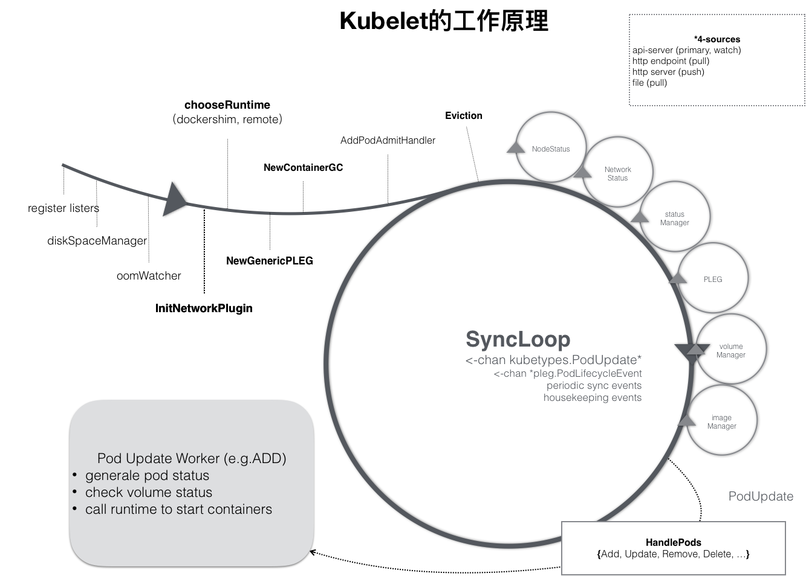
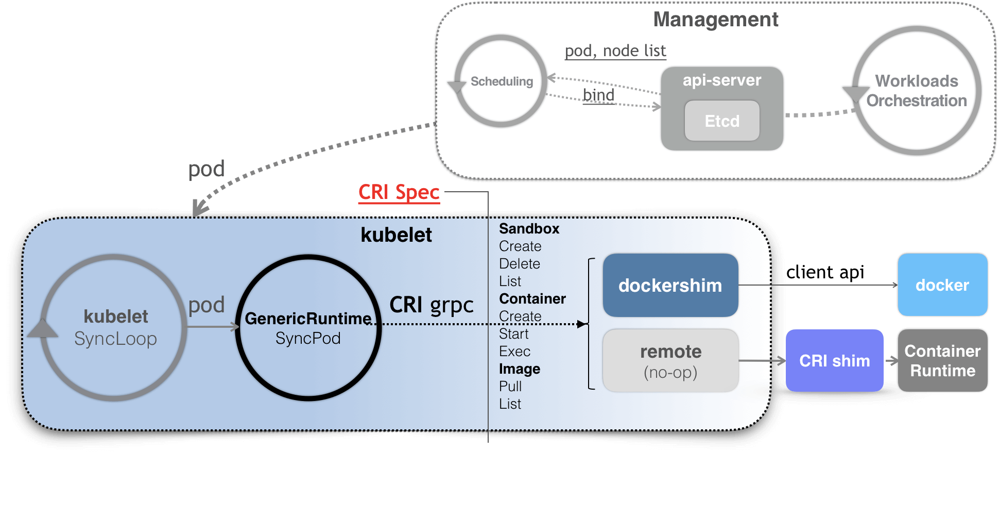

- 00 开篇词 打通“容器技术”的任督二脉.md
- 01 预习篇 · 小鲸鱼大事记（一）：初出茅庐.md
- 02 预习篇 · 小鲸鱼大事记（二）：崭露头角.md
- 03 预习篇 · 小鲸鱼大事记（三）：群雄并起.md
- 04 预习篇 · 小鲸鱼大事记（四）：尘埃落定.md
- 05 白话容器基础（一）：从进程说开去.md
- 06 白话容器基础（二）：隔离与限制.md
- 07 白话容器基础（三）：深入理解容器镜像.md
- 08 白话容器基础（四）：重新认识Docker容器.md
- 09 从容器到容器云：谈谈Kubernetes的本质.md
- 10 Kubernetes一键部署利器：kubeadm.md
- 11 从0到1：搭建一个完整的Kubernetes集群.md
- 12 牛刀小试：我的第一个容器化应用.md
- 13 为什么我们需要Pod？.md
- 14 深入解析Pod对象（一）：基本概念.md
- 15 深入解析Pod对象（二）：使用进阶.md
- 16 编排其实很简单：谈谈“控制器”模型.md
- 17 经典PaaS的记忆：作业副本与水平扩展.md
- 18 深入理解StatefulSet（一）：拓扑状态.md
- 19 深入理解StatefulSet（二）：存储状态.md
- 20 深入理解StatefulSet（三）：有状态应用实践.md
- 21 容器化守护进程的意义：DaemonSet.md
- 22 撬动离线业务：Job与CronJob.md
- 23 声明式API与Kubernetes编程范式.md
- 24 深入解析声明式API（一）：API对象的奥秘.md
- 25 深入解析声明式API（二）：编写自定义控制器.md
- 26 基于角色的权限控制：RBAC.md
- 27 聪明的微创新：Operator工作原理解读.md
- 28 PV、PVC、StorageClass，这些到底在说啥？.md
- 29 PV、PVC体系是不是多此一举？从本地持久化卷谈起.md
- 30 编写自己的存储插件：FlexVolume与CSI.md
- 31 容器存储实践：CSI插件编写指南.md
- 32 浅谈容器网络.md
- 33 深入解析容器跨主机网络.md
- 34 Kubernetes网络模型与CNI网络插件.md
- 35 解读Kubernetes三层网络方案.md
- 36 为什么说Kubernetes只有soft multi-tenancy？.md
- 37 找到容器不容易：Service、DNS与服务发现.md
- 38 从外界连通Service与Service调试“三板斧”.md
- 39 谈谈Service与Ingress.md
- 40 Kubernetes的资源模型与资源管理.md
- 41 十字路口上的Kubernetes默认调度器.md
- 42 Kubernetes默认调度器调度策略解析.md
- 43 Kubernetes默认调度器的优先级与抢占机制.md
- 44 Kubernetes GPU管理与Device Plugin机制.md
- 45 幕后英雄：SIG-Node与CRI.md
- 46 解读 CRI 与 容器运行时.md
- 47 绝不仅仅是安全：Kata Containers 与 gVisor.md
- 48 Prometheus、Metrics Server与Kubernetes监控体系.md
- 49 Custom Metrics_ 让Auto Scaling不再“食之无味”.md
- 50 让日志无处可逃：容器日志收集与管理.md
- 51 谈谈Kubernetes开源社区和未来走向.md
- 52 答疑：在问题中解决问题，在思考中产生思考.md
- 特别放送 2019 年，容器技术生态会发生些什么？.md
- 特别放送 基于 Kubernetes 的云原生应用管理，到底应该怎么做？.md
- 结束语 Kubernetes：赢开发者赢天下.md
45 幕后英雄：SIG-Node与CRI
你好，我是张磊。今天我和你分享的主题是：幕后英雄之SIG-Node与CRI。
在前面的文章中，我为你详细讲解了关于 Kubernetes 调度和资源管理相关的内容。实际上，在调度这一步完成后，Kubernetes 就需要负责将这个调度成功的 Pod，在宿主机上创建出来，并把它所定义的各个容器启动起来。这些，都是 kubelet 这个核心组件的主要功能。
在接下来三篇文章中，我就深入到 kubelet 里面，为你详细剖析一下 Kubernetes 对容器运行时的管理能力。
在 Kubernetes 社区里，与 kubelet 以及容器运行时管理相关的内容，都属于 SIG-Node 的范畴。如果你经常参与社区的话，你可能会觉得，相比于其他每天都热闹非凡的 SIG小组，SIG-Node 是 Kubernetes 里相对沉寂也不太发声的一个小组，小组里的成员也很少在外面公开宣讲。
不过，正如我前面所介绍的，SIG-Node以及 kubelet，其实是 Kubernetes整套体系里非常核心的一个部分。 毕竟，它们才是 Kubernetes 这样一个容器编排与管理系统，跟容器打交道的主要“场所”。
而 kubelet 这个组件本身，也是 Kubernetes 里面第二个不可被替代的组件（第一个不可被替代的组件当然是 kube-apiserver）。也就是说，无论如何，我都不太建议你对 kubelet 的代码进行大量的改动。保持 kubelet 跟上游基本一致的重要性，就跟保持 kube-apiserver 跟上游一致是一个道理。
当然， kubelet 本身，也是按照“控制器”模式来工作的。它实际的工作原理，可以用如下所示的一幅示意图来表示清楚。

- 可以看到，kubelet 的工作核心，就是一个控制循环，即：SyncLoop（图中的大圆圈）。而驱动这个控制循环运行的事件，包括四种：Pod 更新事件；
Pod 生命周期变化；
kubelet 本身设置的执行周期；
定时的清理事件。
所以，跟其他控制器类似，kubelet 启动的时候，要做的第一件事情，就是设置 Listers，也就是注册它所关心的各种事件的 Informer。这些 Informer，就是 SyncLoop 需要处理的数据的来源。
此外，kubelet 还负责维护着很多很多其他的子控制循环（也就是图中的小圆圈）。这些控制循环的名字，一般被称作某某 Manager，比如 Volume Manager、Image Manager、Node Status Manager等等。
不难想到，这些控制循环的责任，就是通过控制器模式，完成 kubelet 的某项具体职责。比如 Node Status Manager，就负责响应 Node 的状态变化，然后将 Node 的状态收集起来，并通过 Heartbeat 的方式上报给 APIServer。再比如 CPU Manager，就负责维护该 Node 的 CPU 核的信息，以便在 Pod 通过 cpuset 的方式请求 CPU 核的时候，能够正确地管理 CPU 核的使用量和可用量。
那么这个 SyncLoop，又是如何根据 Pod 对象的变化，来进行容器操作的呢？
实际上，kubelet 也是通过 Watch机制，监听了与自己相关的 Pod 对象的变化。当然，这个 Watch 的过滤条件是该 Pod 的 nodeName 字段与自己相同。kubelet 会把这些 Pod 的信息缓存在自己的内存里。
而当一个 Pod 完成调度、与一个 Node 绑定起来之后， 这个 Pod 的变化就会触发 kubelet 在控制循环里注册的 Handler，也就是上图中的 HandlePods 部分。此时，通过检查该 Pod 在 kubelet 内存里的状态，kubelet 就能够判断出这是一个新调度过来的 Pod，从而触发 Handler 里 ADD 事件对应的处理逻辑。
在具体的处理过程当中，kubelet 会启动一个名叫 Pod Update Worker的、单独的 Goroutine 来完成对 Pod 的处理工作。
比如，如果是 ADD 事件的话，kubelet 就会为这个新的 Pod 生成对应的 Pod Status，检查 Pod 所声明使用的 Volume 是不是已经准备好。然后，调用下层的容器运行时（比如 Docker），开始创建这个 Pod 所定义的容器。
而如果是 UPDATE 事件的话，kubelet 就会根据 Pod 对象具体的变更情况，调用下层容器运行时进行容器的重建工作。
在这里需要注意的是，kubelet 调用下层容器运行时的执行过程，并不会直接调用 Docker 的 API，而是通过一组叫作 CRI（Container Runtime Interface，容器运行时接口）的 gRPC 接口来间接执行的。
Kubernetes 项目之所以要在 kubelet 中引入这样一层单独的抽象，当然是为了对 Kubernetes 屏蔽下层容器运行时的差异。实际上，对于 1.6版本之前的 Kubernetes 来说，它就是直接调用Docker 的 API 来创建和管理容器的。
但是，正如我在本专栏开始介绍容器背景的时候提到过的，Docker 项目风靡全球后不久，CoreOS 公司就推出了 rkt 项目来与 Docker 正面竞争。在这种背景下，Kubernetes 项目的默认容器运行时，自然也就成了两家公司角逐的重要战场。
毋庸置疑，Docker 项目必然是 Kubernetes 项目最依赖的容器运行时。但凭借与 Google 公司非同一般的关系，CoreOS 公司还是在2016年成功地将对 rkt 容器的支持，直接添加进了 kubelet 的主干代码里。
不过，这个“赶鸭子上架”的举动，并没有为 rkt 项目带来更多的用户，反而给 kubelet 的维护人员，带来了巨大的负担。
不难想象，在这种情况下， kubelet 任何一次重要功能的更新，都不得不考虑Docker 和 rkt 这两种容器运行时的处理场景，然后分别更新 Docker 和 rkt 两部分代码。
更让人为难的是，由于 rkt 项目实在太小众，kubelet 团队所有与 rkt 相关的代码修改，都必须依赖于 CoreOS 的员工才能做到。这不仅拖慢了 kubelet 的开发周期，也给项目的稳定性带来了巨大的隐患。
与此同时，在2016年，Kata Containers 项目的前身runV项目也开始逐渐成熟，这种基于虚拟化技术的强隔离容器，与 Kubernetes 和 Linux 容器项目之间具有良好的互补关系。所以，在 Kubernetes 上游，对虚拟化容器的支持很快就被提上了日程。
不过，虽然虚拟化容器运行时有各种优点，但它与 Linux 容器截然不同的实现方式，使得它跟 Kubernetes 的集成工作，比 rkt 要复杂得多。如果此时，再把对runV支持的代码也一起添加到 kubelet 当中，那么接下来kubelet 的维护工作就可以说完全没办法正常进行了。
所以，在2016年，SIG-Node 决定开始动手解决上述问题。而解决办法也很容易想到，那就是把 kubelet 对容器的操作，统一地抽象成一个接口。这样，kubelet 就只需要跟这个接口打交道了。而作为具体的容器项目，比如 Docker、 rkt、runV，它们就只需要自己提供一个该接口的实现，然后对 kubelet 暴露出 gRPC 服务即可。
这一层统一的容器操作接口，就是 CRI了。我会在下一篇文章中，为你详细讲解 CRI 的设计与具体的实现原理。
而在有了 CRI 之后，Kubernetes 以及 kubelet 本身的架构，就可以用如下所示的一幅示意图来描述。

- 可以看到，当 Kubernetes 通过编排能力创建了一个 Pod 之后，调度器会为这个 Pod 选择一个具体的节点来运行。这时候，kubelet 当然就会通过前面讲解过的 SyncLoop 来判断需要执行的具体操作，比如创建一个Pod。那么此时，kubelet 实际上就会调用一个叫作 GenericRuntime 的通用组件来发起创建 Pod 的 CRI 请求。那么，这个 CRI 请求，又该由谁来响应呢？
如果你使用的容器项目是 Docker 的话，那么负责响应这个请求的就是一个叫作 dockershim 的组件。它会把 CRI 请求里的内容拿出来，然后组装成 Docker API 请求发给 Docker Daemon。
需要注意的是，在 Kubernetes 目前的实现里，dockershim 依然是 kubelet 代码的一部分。当然，在将来，dockershim 肯定会被从 kubelet 里移出来，甚至直接被废弃掉。
而更普遍的场景，就是你需要在每台宿主机上单独安装一个负责响应 CRI 的组件，这个组件，一般被称作CRI shim。顾名思义，CRI shim 的工作，就是扮演 kubelet 与容器项目之间的“垫片”（shim）。所以它的作用非常单一，那就是实现 CRI 规定的每个接口，然后把具体的 CRI 请求“翻译”成对后端容器项目的请求或者操作。
总结
在本篇文章中，我首先为你介绍了 SIG-Node 的职责，以及 kubelet 这个组件的工作原理。
接下来，我为你重点讲解了 kubelet 究竟是如何将 Kubernetes 对应用的定义，一步步转换成最终对 Docker 或者其他容器项目的API 请求的。
不难看到，在这个过程中，kubelet 的 SyncLoop 和 CRI 的设计，是其中最重要的两个关键点。也正是基于以上设计，SyncLoop 本身就要求这个控制循环是绝对不可以被阻塞的。所以，凡是在 kubelet 里有可能会耗费大量时间的操作，比如准备 Pod 的 Volume、拉取镜像等，SyncLoop 都会开启单独的 Goroutine 来进行操作。
思考题
请问，在你的项目中，你是如何部署 kubelet 这个组件的？为什么要这么做呢？
感谢你的收听，欢迎你给我留言，也欢迎分享给更多的朋友一起阅读。
© 2019 - 2023 Liangliang Lee. Powered by gin and hexo-theme-book.